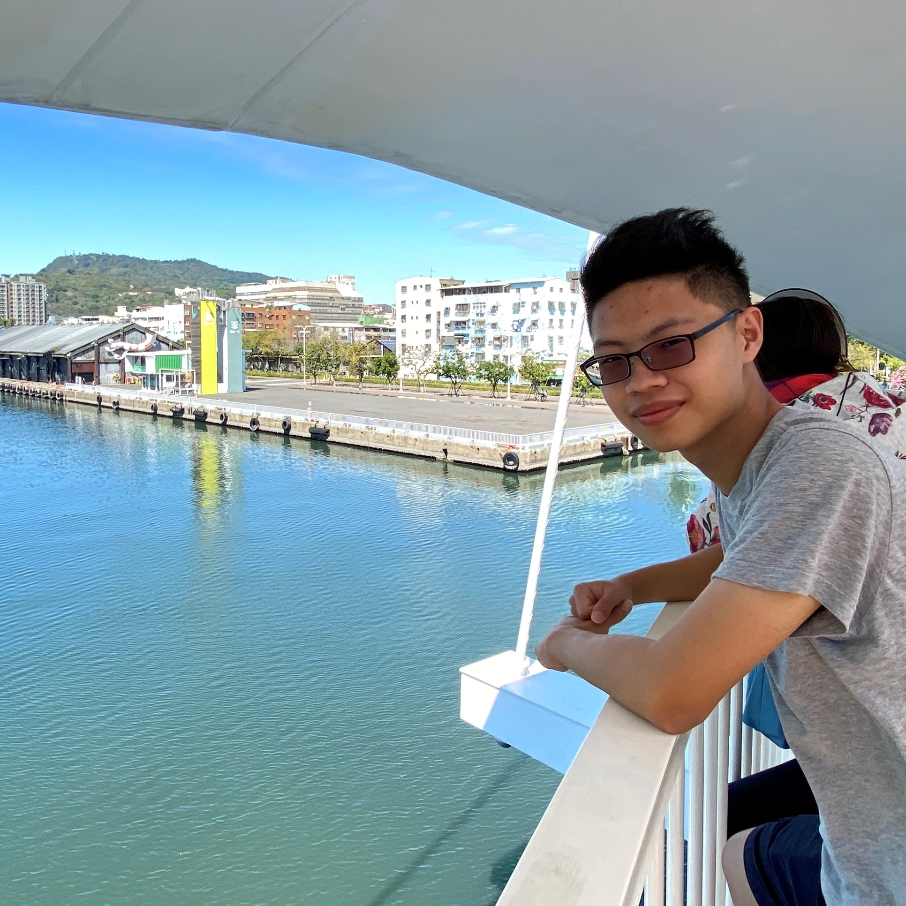

Yu A Taipei Tech CSIE Student.
About Me
- Taichung
- Basketball & Coding
Experience
- 49th National Skills Competitions, IT Software Solutions for Business, regional 4th Place
- 4th Acer BeingLife, Silver
- 50th National Skills Competitions, Cyber Security, regional 4th Place
- NTUT Programming Club Vice Director & GDSC Core team member